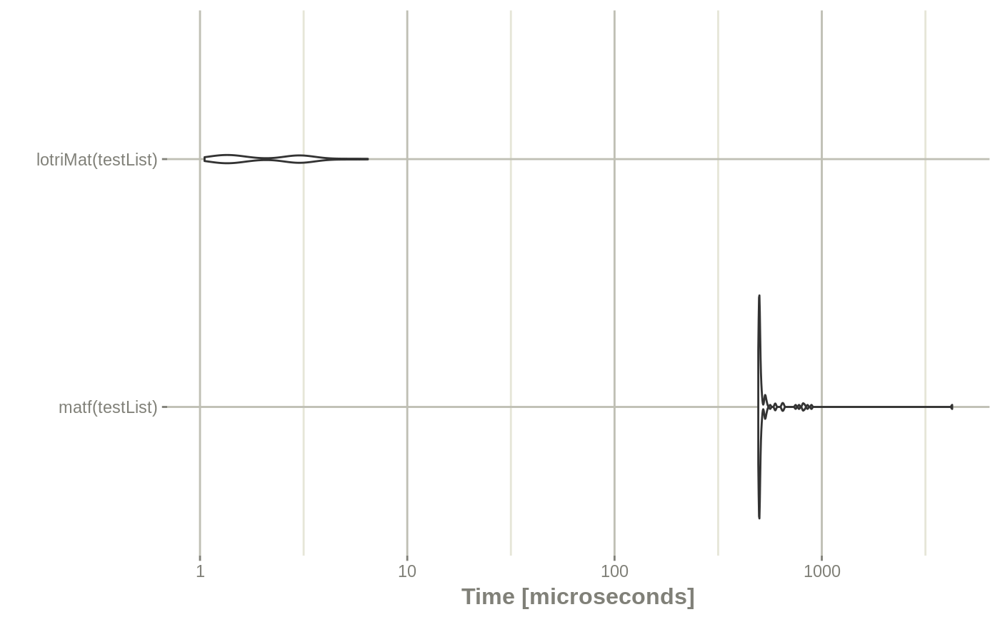

vignettes/lotri-motivation.Rmd
lotri-motivation.RmdThis was made to allow people (like me) to specify lower triangular matrices similar to the domain specific language implemented in nlmixr. Originally I had it included in RxODE, but thought it may have more general applicability, so I separated it into a new package.
For me, specifying the matrices in this way is easier than specifying them using R’s default matrix. For instance to fully specify a simple 2x2 matrix, in R you specify:
With lotri, you simply specify:
library(lotri) library(microbenchmark) library(ggplot2) library(RxODE) mat <- lotri(a+b ~ c(1, 0.5, 1))
I find it more legible and easier to specify, especially if you have a more complex matrix. For instance with the more complex matrix:
To fully specify this in base R you would need to use:
mat <- matrix(c(1, 0.5, 0, 0, 0, 0.5, 1, 0, 0, 0, 0, 0, 1, 0, 0, 0, 0, 0, 1, 0.5, 0, 0, 0, 0.5, 1), nrow=5, ncol=5, dimnames= list(c("a", "b", "c", "d", "e"), c("a", "b", "c", "d", "e")))
Of course with the excellent Matrix package this is a bit easier:
library(Matrix) mat <- matrix(c(1, 0.5, 0.5, 1),nrow=2,ncol=2,dimnames=list(c("a", "b"), c("a", "b"))) mat <- bdiag(list(mat, matrix(1), mat)) ## Convert back to standard matrix mat <- as.matrix(mat) ## dimnames(mat) <- list(c("a", "b", "c", "d", "e"), c("a", "b", "c", "d", "e"))
Regardless, I think lotri is a bit easier to use.
lotri also allows lists of matrices to be created by conditioning on an id with the | syntax.
For example:
mat <- lotri({ a+b ~ c(1, 0.5, 1) | id c ~ 1 | occ d +e ~ c(1, 0.5, 1) | id(lower=3, upper=2, omegaIsChol=FALSE) }) print(mat) #> $id #> d e #> d 1.0 0.5 #> e 0.5 1.0 #> #> $occ #> c #> c 1 #> #> Properties: lower, upper, omegaIsChol print(mat$lower) #> $id #> d e #> 3 3 #> #> $occ #> c #> -Inf print(mat$upper) #> $id #> d e #> Inf Inf #> #> $occ #> c #> Inf print(mat$omegaIsChol) #> $id #> [1] FALSE
This gives a list of matrix(es) conditioned on the variable after the |. It also can add properties to each list that can be accessible after the list of matrices is returned, as shown in the above example. To do this, you simply have to enclose the properties after the conditional variable. That is et1 ~ id(lower=3).
Now there is even a faster way to do a similar banded matrix concatenation with lotriMat
testList <- list(lotri({et2 + et3 + et4 ~ c(40, 0.1, 20, 0.1, 0.1, 30)}), lotri(et5 ~ 6), lotri(et1+et6 ~c(0.1, 0.01, 1)), matrix(c(1L, 0L, 0L, 1L), 2, 2, dimnames=list(c("et7", "et8"), c("et7", "et8")))) matf <- function(.mats){ .omega <- as.matrix(Matrix::bdiag(.mats)) .d <- unlist(lapply(seq_along(.mats), function(x) { dimnames(.mats[[x]])[2] })) dimnames(.omega) <- list(.d, .d) return(.omega) } print(matf(testList)) #> et2 et3 et4 et5 et1 et6 et7 et8 #> et2 40.0 0.1 0.1 0 0.00 0.00 0 0 #> et3 0.1 20.0 0.1 0 0.00 0.00 0 0 #> et4 0.1 0.1 30.0 0 0.00 0.00 0 0 #> et5 0.0 0.0 0.0 6 0.00 0.00 0 0 #> et1 0.0 0.0 0.0 0 0.10 0.01 0 0 #> et6 0.0 0.0 0.0 0 0.01 1.00 0 0 #> et7 0.0 0.0 0.0 0 0.00 0.00 1 0 #> et8 0.0 0.0 0.0 0 0.00 0.00 0 1 print(lotriMat(testList)) #> et2 et3 et4 et5 et1 et6 et7 et8 #> et2 40.0 0.1 0.1 0 0.00 0.00 0 0 #> et3 0.1 20.0 0.1 0 0.00 0.00 0 0 #> et4 0.1 0.1 30.0 0 0.00 0.00 0 0 #> et5 0.0 0.0 0.0 6 0.00 0.00 0 0 #> et1 0.0 0.0 0.0 0 0.10 0.01 0 0 #> et6 0.0 0.0 0.0 0 0.01 1.00 0 0 #> et7 0.0 0.0 0.0 0 0.00 0.00 1 0 #> et8 0.0 0.0 0.0 0 0.00 0.00 0 1 mb <- microbenchmark(matf(testList),lotriMat(testList)) print(mb) #> Unit: microseconds #> expr min lq mean median uq max neval #> matf(testList) 493.756 498.481 570.41727 500.5945 512.7865 4256.218 100 #> lotriMat(testList) 1.052 1.338 2.26031 1.6305 2.9980 6.451 100 autoplot(mb) + rxTheme() #> Coordinate system already present. Adding new coordinate system, which will replace the existing one.
